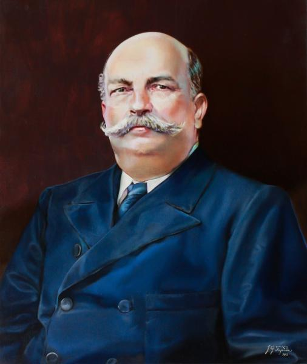
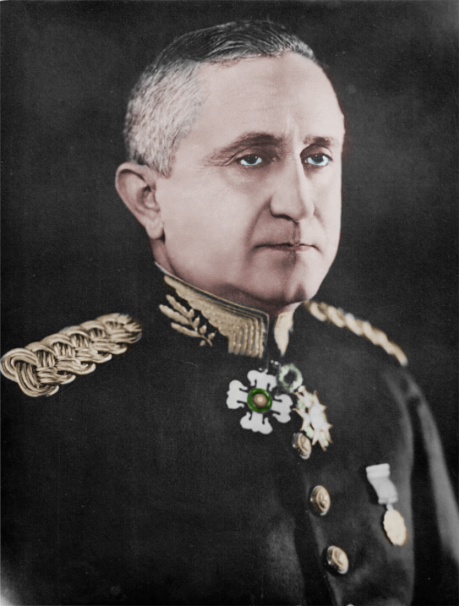
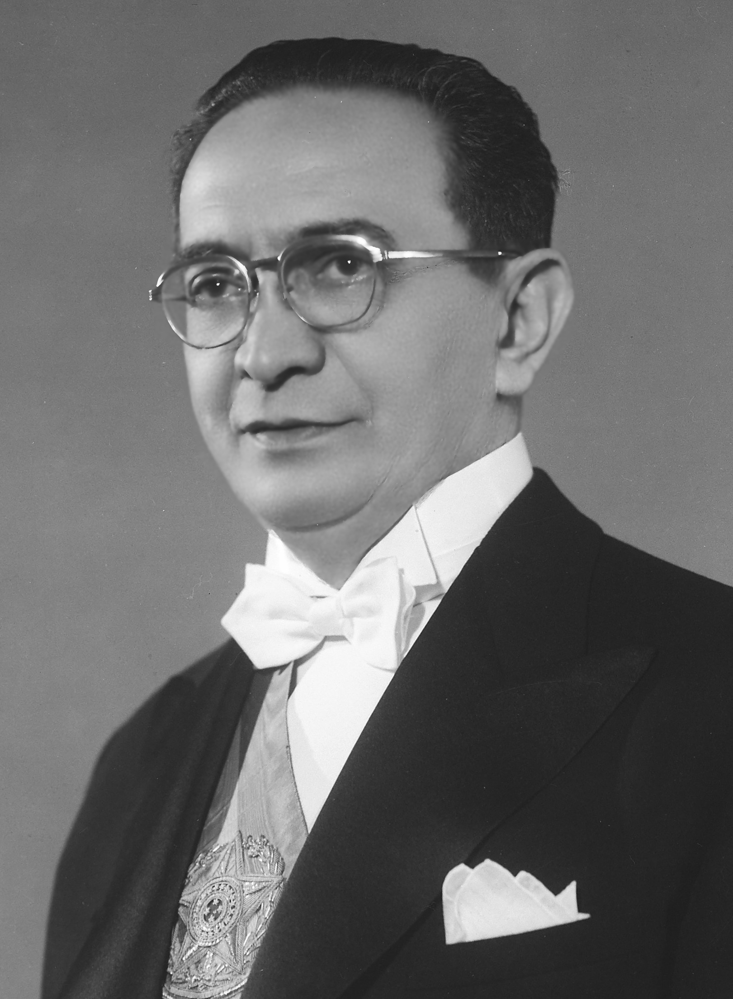
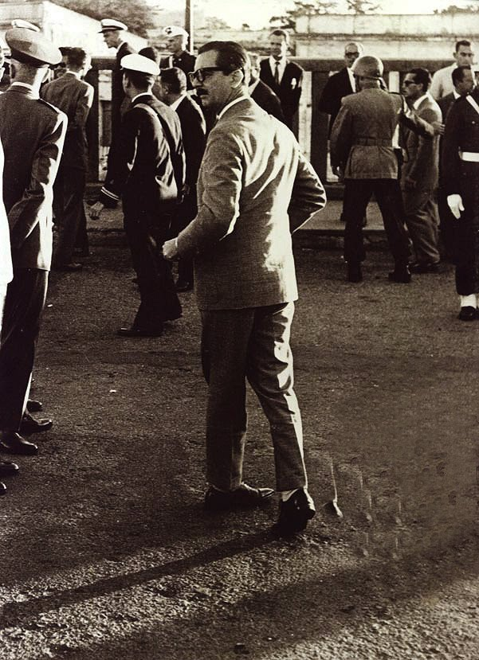
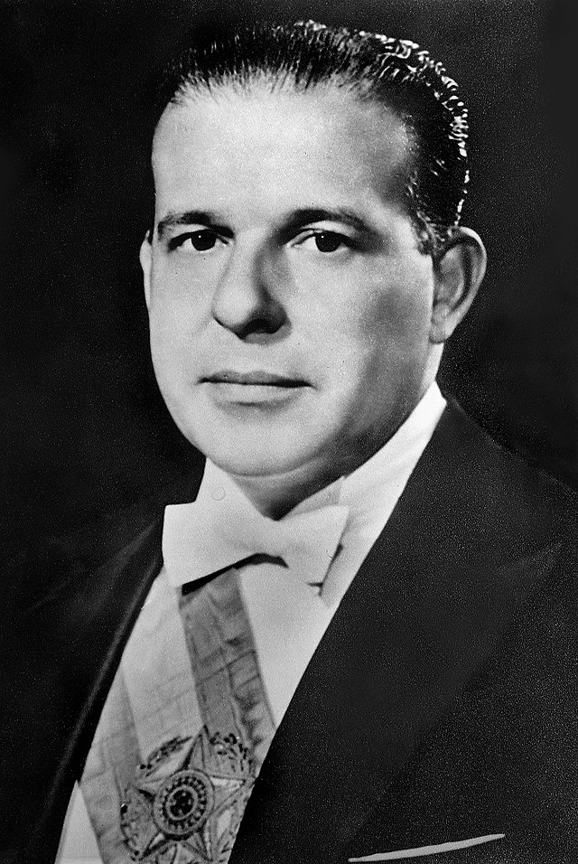
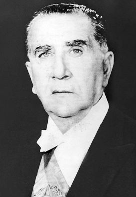
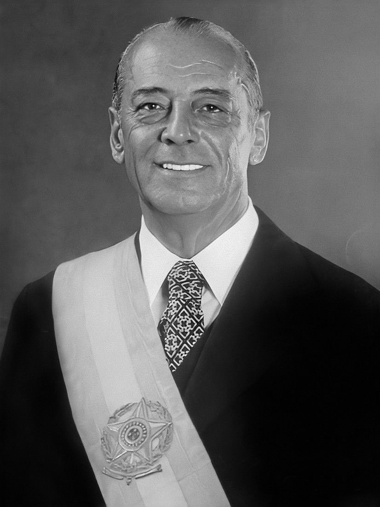
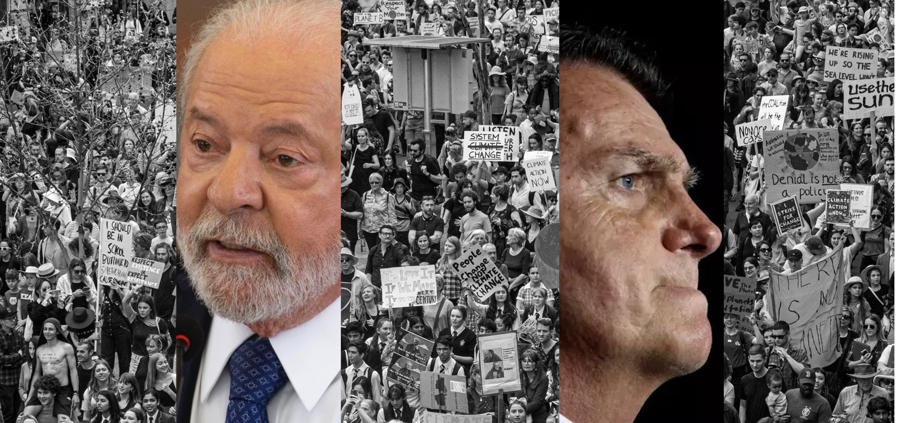

1.1. Continuity of goals and adaptability to systemic forces as main themes 1.2. Diplomatic tradition and the role of Itamaraty 1.3. Fundamental pillars

2.1 Dutra (1946-1951) 2.2 Vargas Second Government (1951-1954) 2.3 Café Filho (1954-1955) 2.4 Juscelino Kubitschek (1955-1960)


3.1 Jânio Quadros (1961) 3.2 João Goulart (1961-1964) 3.3 Humberto Castello Branco (1964-1967) 3.4 Artur da Costa e Silva (1967-1969)


4.1 Emílio Garrastazu Médici (1969-1974) 4.2 Ernesto Geisel (1974-1979) 4.3 João Figueiredo (1979-1985)


*Africa held significant importance during the Figueiredo government as Brazil attempted to expand its contacts with the continent
5.1 José Sarney and the democratic transition 5.2 Renewal of credentials during the 1990s 5.3 Contemporary issues
